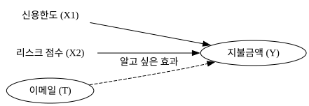
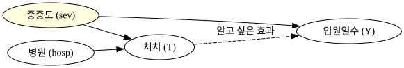
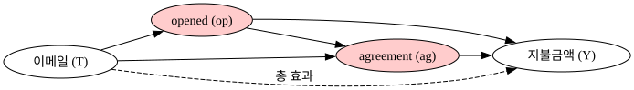

07 — Beyond Confounders#
통제변수를 무조건 많이 넣으면 좋을까? 교란변수 너머의 이야기
교란변수(Confounder)를 통제해야 한다는 건 알겠는데, 그 외의 변수들은 어떻게 해야 할까요? 많이 넣을수록 좋다고 생각하기 쉽지만, 변수에 따라 효과를 더 정밀하게 추정해주기도 하고, 오히려 표준오차를 키우거나, 심지어 편향을 만들어내기도 합니다.
이 챕터에서는 통제변수를 세 가지 유형으로 나눠서 살펴봅니다.
import pandas as pd
import numpy as np
from scipy.special import expit
import statsmodels.formula.api as smf
import graphviz as gr
import os
np.random.seed(42)
os.environ["PATH"] += os.pathsep + r"C:\Program Files\Graphviz\bin"
1. 좋은 통제변수 — 결과(Y)를 잘 예측하는 변수#
핀테크 회사에서 연체 고객에게 이메일을 보내는 실험을 합니다. 5,000명에게 무작위로 이메일(처치)을 발송하고, 이것이 지불금액(결과)에 미치는 효과를 분석합니다. 이메일은 무작위 배정이므로 단순히 이메일 받은 사람과 안 받은 사람의 평균 차이로 ATE를 추정할 수 있을 것 같습니다.
그런데 데이터에는 두 가지 변수가 더 있습니다. credit_limit(신용한도)과 risk_score(리스크 점수)입니다. 이 변수들은 이메일 발송 여부와 무관합니다(무작위 배정이니까요). 하지만 지불금액을 매우 잘 예측합니다. 신용한도가 높은 고객은 원래 지불금액이 많고, 리스크 점수가 높은 고객은 적습니다.
g = gr.Digraph()
g.attr(rankdir="LR")
with g.subgraph() as s:
s.attr(rank="same")
s.node("X1", "신용한도 (X1)", shape="plaintext")
s.node("X2", "리스크 점수 (X2)", shape="plaintext")
g.node("T", "이메일 (T)")
g.node("Y", "지불금액 (Y)")
g.edge("X1", "Y")
g.edge("X2", "Y")
g.edge("T", "Y", style="dashed", label="알고 싶은 효과")
g

DAG를 보면, 신용한도와 리스크 점수는 이메일의 원인이 아닙니다. 처치(T)로 가는 화살표가 없으니 교란변수가 아닙니다. 그렇다면 모델에 넣어야 할까요?
FWL(Frisch-Waugh-Lovell) 정리#
통계학의 강력한 결과 중 하나입니다. 회귀모형에 통제변수를 추가하는 것은, 처치와 결과 각각에서 그 통제변수의 영향을 제거한 잔차끼리 회귀하는 것과 정확히 동일합니다.
신용한도와 리스크 점수가 지불금액 분산의 상당 부분을 설명합니다. 이것들을 통제하면 \(\tilde{Y}\)의 분산이 크게 줄어들고, 결과적으로 이메일 계수의 표준오차(SE)가 감소합니다. 추정치 자체는 거의 변하지 않지만, 훨씬 정밀해집니다.
n = 5000
credit_limit = np.random.gamma(2, 300, n).round()
risk_score = np.random.beta(2, 5, n).round(2)
email = np.random.binomial(1, 0.5, n)
payments = (300 + 0.3 * credit_limit - 400 * risk_score
+ 5 * email + np.random.normal(0, 50, n))
payments = np.maximum(0, payments).round()
data = pd.DataFrame(dict(
payments=payments, email=email,
credit_limit=credit_limit, risk_score=risk_score
))
m_simple = smf.ols("payments ~ email", data=data).fit()
m_ctrl = smf.ols("payments ~ email + credit_limit + risk_score", data=data).fit()
resid_Y = smf.ols("payments ~ credit_limit + risk_score", data=data).fit().resid
resid_T = smf.ols("email ~ credit_limit + risk_score", data=data).fit().resid
fwl = smf.ols("resid_Y ~ resid_T",
data=pd.DataFrame({"resid_Y": resid_Y, "resid_T": resid_T})).fit()
pd.DataFrame({
"모델": ["통제 없음", "통제 추가", "FWL"],
"email 계수": [m_simple.params["email"], m_ctrl.params["email"], fwl.params["resid_T"]],
"SE": [m_simple.bse["email"], m_ctrl.bse["email"], fwl.bse["resid_T"]]
}).round(4)
| 모델 | email 계수 | SE | |
|---|---|---|---|
| 0 | 통제 없음 | -2.7232 | 4.2340 |
| 1 | 통제 추가 | 4.0550 | 1.3988 |
| 2 | FWL | 4.0550 | 1.3985 |
계수는 거의 동일하지만 SE가 크게 줄어든 것을 확인할 수 있습니다. 통제 없이는 p값이 0.07로 유의하지 않았던 것이 통제 후에는 p < 0.001로 명확해집니다.
좋은 통제변수의 조건
결과(Y)를 잘 예측하는 변수라면, 처치(T)와 무관하더라도 모델에 추가할 가치가 있습니다. SE를 줄여서 같은 샘플 크기로 더 정밀한 추정을 할 수 있기 때문입니다. ATE 추정치 자체는 바뀌지 않습니다.
2. 해로운 통제변수 — 처치(T)만 예측하는 변수#
두 병원에서 신약 실험을 합니다. 진짜 약을 복용하면 입원 기간이 줄어들 것입니다. 병원 A는 주로 경증 환자를 받고 10%에게만 진짜 약을 투여하며, 병원 B는 주로 중증 환자를 받고 90%에게 진짜 약을 투여합니다.
교란변수는 중증도(severity) 입니다. 중증도가 높으면 입원 기간도 길고, 진짜 약을 받을 확률도 높습니다. 그렇다면 hospital(병원) 변수는 어떨까요? 병원은 처치를 잘 예측하지만, 중증도를 통제하고 나면 입원 기간과 무관합니다.
g2 = gr.Digraph()
g2.attr(rankdir="LR")
g2.node("sev", "중증도 (sev)", style="filled", fillcolor="lightyellow")
g2.node("hosp", "병원 (hosp)")
g2.node("T", "처치 (T)")
g2.node("Y", "입원일수 (Y)")
g2.edge("sev", "T")
g2.edge("sev", "Y")
g2.edge("hosp", "T")
g2.edge("T", "Y", style="dashed", label="알고 싶은 효과")
g2

n_h = 100
hospital = np.array([0]*n_h + [1]*n_h)
severity = np.concatenate([
np.random.normal(10, 3, n_h),
np.random.normal(20, 3, n_h)
])
treatment = np.concatenate([
np.random.binomial(1, 0.1, n_h),
np.random.binomial(1, 0.9, n_h)
])
days = np.maximum(1, 20 - 8*treatment + 2*severity + np.random.normal(0, 5, 2*n_h))
hosp_data = pd.DataFrame(dict(
days=days.round(1), treatment=treatment,
severity=severity.round(1), hospital=hospital
))
m1 = smf.ols("days ~ treatment", data=hosp_data).fit()
m2 = smf.ols("days ~ treatment + severity", data=hosp_data).fit()
m3 = smf.ols("days ~ treatment + severity + hospital", data=hosp_data).fit()
pd.DataFrame({
"모델": ["통제 없음", "중증도 통제", "중증도 + 병원"],
"treatment 계수": [m1.params["treatment"], m2.params["treatment"], m3.params["treatment"]],
"SE": [m1.bse["treatment"], m2.bse["treatment"], m3.bse["treatment"]]
}).round(3)
| 모델 | treatment 계수 | SE | |
|---|---|---|---|
| 0 | 통제 없음 | 7.654 | 1.374 |
| 1 | 중증도 통제 | -9.230 | 0.917 |
| 2 | 중증도 + 병원 | -9.593 | 1.098 |
병원을 추가하면 계수는 비슷하지만 SE가 커집니다. 표준오차 공식의 분모에는 처치 변수의 분산이 있는데, hospital을 추가하면 같은 병원 내에서의 처치 변동만 남아 유효 분산이 줄어들기 때문입니다.
해로운 통제변수의 조건
처치(T)만 예측하고 결과(Y)와는 무관한 변수는 넣지 않는 게 낫습니다. 계수는 비슷하게 유지되지만 SE가 불필요하게 커져서 통계적 검정력이 떨어집니다.
3. 나쁜 통제변수 — 선택 편향을 만들어내는 변수#
3-1. 처치(T) 이후에 발생하는 변수#
다시 이메일 실험으로 돌아옵니다. 이번엔 두 가지 변수를 추가로 살펴봅니다.
opened: 이메일을 열었는지 여부agreement: 이메일 수신 후 부서에 연락해 채무 협상을 한 경우
직관적으로 생각해보면, 이메일을 받지 않으면 열 수 없습니다. agreement도 이메일 수신 후에 가능합니다. 이 변수들은 이메일이 원인이 되어 발생한 결과입니다.
g3 = gr.Digraph()
g3.attr(rankdir="LR")
g3.node("T", "이메일 (T)")
g3.node("op", "opened (op)", style="filled", fillcolor="#ffcccc")
g3.node("ag", "agreement (ag)", style="filled", fillcolor="#ffcccc")
g3.node("Y", "지불금액 (Y)")
g3.edge("T", "op")
g3.edge("T", "ag")
g3.edge("op", "ag")
g3.edge("op", "Y")
g3.edge("ag", "Y")
g3.edge("T", "Y", style="dashed", label="총 효과")
g3

만약 agreement를 통제하면, 우리는 사실 이렇게 묻는 것입니다. “agreement가 고정되었을 때, 이메일의 효과는?” 하지만 이메일이 지불금액을 높이는 핵심 경로 중 하나가 agreement를 늘리는 것인데, 그 경로를 막아버리면 이메일의 실제 효과가 과소추정됩니다.
더 심각한 문제가 있습니다. agreement=0인 사람들을 비교한다고 해봅시다.
T=0, agreement=0: 이메일을 못 받아서 agreement를 못 한 사람 (성실하지만 기회가 없었던 채무자 포함)
T=1, agreement=0: 이메일을 받고도 agreement를 하지 않은 사람 (완강하게 거부한 채무자)
같은 agreement=0이지만 전혀 다른 유형입니다. 무작위 배정이어도 agreement를 조건으로 걸면 두 그룹이 더 이상 비교 가능하지 않습니다. 이것이 선택 편향(Selection Bias) 입니다.
나쁜 통제변수 유형 1: 처치 경로 위의 변수
T → opened → agreement → Y처럼, 처치에서 결과로 가는 경로 위에 있는 변수는 절대 통제하면 안 됩니다.
credit_limit = np.random.gamma(2, 300, n).round()
risk_score = np.random.beta(2, 5, n).round(2)
email = np.random.binomial(1, 0.5, n)
opened = np.random.binomial(1, np.where(email==1, 0.7, 0.01), n)
agreement = np.random.binomial(1, expit(-2 + 3*opened + email), n)
payments = (300 + 0.3*credit_limit - 400*risk_score
+ 5*email + 10*opened + 20*agreement
+ np.random.normal(0, 50, n))
payments = np.maximum(0, payments).round()
bad_data = pd.DataFrame(dict(
payments=payments, email=email,
opened=opened, agreement=agreement,
credit_limit=credit_limit, risk_score=risk_score
))
m_ok = smf.ols("payments ~ email + credit_limit + risk_score", data=bad_data).fit()
m_open = smf.ols("payments ~ email + opened + credit_limit + risk_score", data=bad_data).fit()
m_agree = smf.ols("payments ~ email + agreement + credit_limit + risk_score", data=bad_data).fit()
pd.DataFrame({
"모델": ["올바른 모델", "opened 추가", "agreement 추가"],
"email 계수": [m_ok.params["email"], m_open.params["email"], m_agree.params["email"]]
}).round(3)
| 모델 | email 계수 | |
|---|---|---|
| 0 | 올바른 모델 | 24.760 |
| 1 | opened 추가 | 6.587 |
| 2 | agreement 추가 | 8.802 |
처치 경로 위의 변수를 통제할수록 이메일 효과 추정치가 줄어드는 것을 확인할 수 있습니다.
3-2. Bad COP (Conditional on Positives)#
마케팅 캠페인이 고객 지출에 미치는 효과를 분석합니다. 데이터를 열어보니 구매하지 않은 고객(\(Y=0\))이 엄청나게 많습니다. 일부 분석가들은 “0이 너무 많아서 분석이 어렵다”며 구매자(\(Y > 0\))만 걸러서 분석합니다. 이것이 COP(Conditional on Positives) 입니다.
고객을 두 종류로 나눠서 생각해봅시다.
부유한 고객(rich): 캠페인이 없어도 어차피 삽니다. 항상 \(Y > 0\).
절약형 고객(frugal): 캠페인이 있어야만 삽니다. 캠페인 없으면 \(Y = 0\).
\(Y > 0\)인 고객만 보면 처치군에는 frugal 고객이 섞여있고(소득 낮음), 통제군은 모두 rich 고객입니다. 이 두 그룹은 처음부터 달랐습니다.
나쁜 통제변수 유형 2: Bad COP
\(Y > 0\)만 골라서 분석하는 것은 처치 결과에 의해 만들어진 선택 편향입니다. 0이 많아서 불편하더라도, 0은 중요한 정보입니다.
n = 2000
marketing = np.random.binomial(1, 0.5, n)
rich = np.random.binomial(1, 0.3, n)
spend = np.where(
rich == 1,
np.random.normal(300, 50, n),
np.where(marketing==1, np.random.normal(200, 50, n), 0)
)
spend = np.maximum(0, spend).round()
cop_data = pd.DataFrame(dict(spend=spend, marketing=marketing, rich=rich))
ate_correct = cop_data.groupby("marketing")["spend"].mean().diff().iloc[-1]
buyers = cop_data[cop_data["spend"] > 0]
ate_cop = buyers.groupby("marketing")["spend"].mean().diff().iloc[-1]
pd.DataFrame({
"분석 방법": ["전체 데이터 (올바른 ATE)", "Bad COP (구매자만)"],
"추정 ATE": [ate_correct, ate_cop]
}).round(1)
| 분석 방법 | 추정 ATE | |
|---|---|---|
| 0 | 전체 데이터 (올바른 ATE) | 138.2 |
| 1 | Bad COP (구매자만) | -69.7 |
핵심 정리#
통제변수를 결정할 때는 항상 인과 그래프(DAG)를 먼저 그려보세요. 그래프 없이 통계적 직관만으로 판단하면 실수할 가능성이 높습니다.
변수 종류 |
특징 |
판단 |
|---|---|---|
교란변수 |
T와 Y 모두의 원인 |
반드시 통제 |
Y 예측 변수 |
Y를 잘 예측, T와 무관 |
SE 감소 효과 |
T만 예측 |
T의 원인이지만 Y와 무관 |
안 넣는 게 나음 |
T의 결과 |
T → 변수 → Y 경로 위 |
절대 금지 |
Y 필터링(COP) |
\(Y > 0\) 조건부 분석 |
절대 금지 |
참고: Matheus Facure, Python Causality Handbook, Chapter 07 — Beyond Confounders